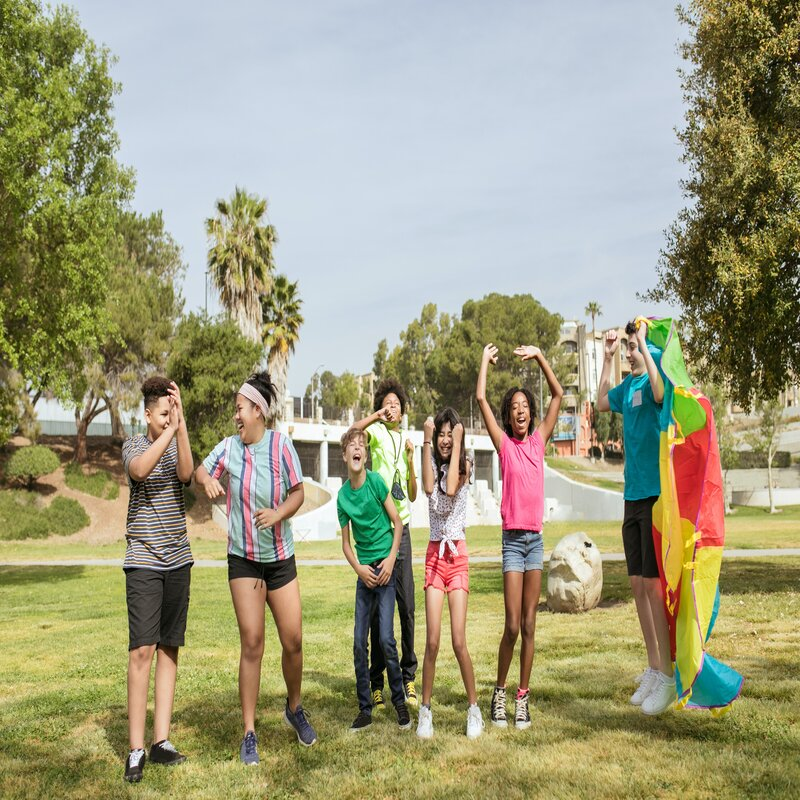

Programs
Beginners Very visual, fun, and easy to understand. Kids start working on storytelling and game design using apps like code spark academy, gamestar mechanic and scratch. At this point, the kid must always be in the line of sight of the instructor and often has questions. The instructor guides the children step by step. This stage is a crucial time to cultivate a love for learning.
Intermediates At this point, the instructor switches to being a supervisor: They let the children work more independently, but reassures them and keep monitoring them in case they need rescuing. The apps being use are CodeCombat, scratch, codeMoji, in others. Children learn javascript and LUA.
Masters Children are sufficiently capable of dealing with edge cases themselves, becoming autonomous enough in creating games, coding, and programming. Kids learn C# and Python.
Facts
Facts Problem-solving is a crucial skill to have. When children learn to code, it helps them develop problem-solving and essential skills such as logic, critical thinking, and STEM skills. While learning to code, children are encouraged to think critically and strategically to solve problems. Visual blocks are often used for younger children to represent programming concepts and terminology. Kids who code often have higher grades than other children.
More Facts
More Facts
